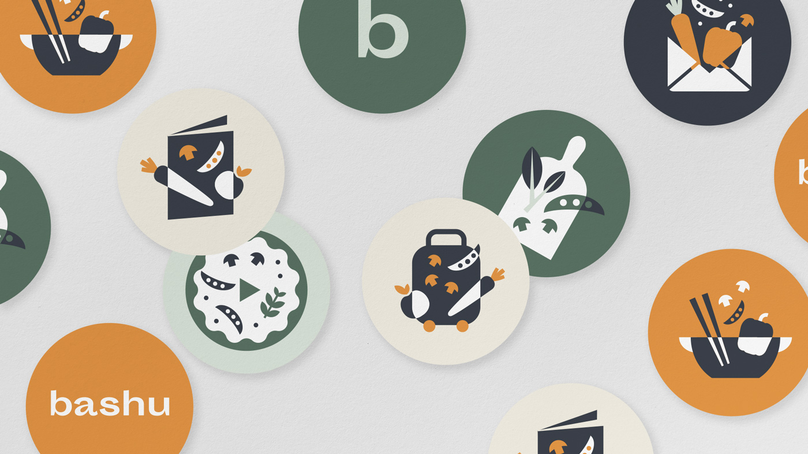
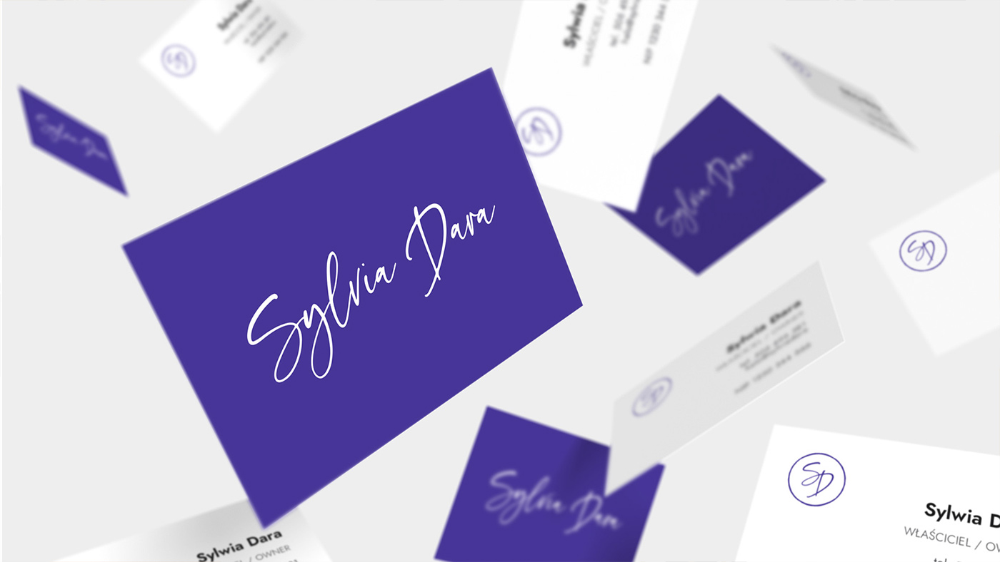
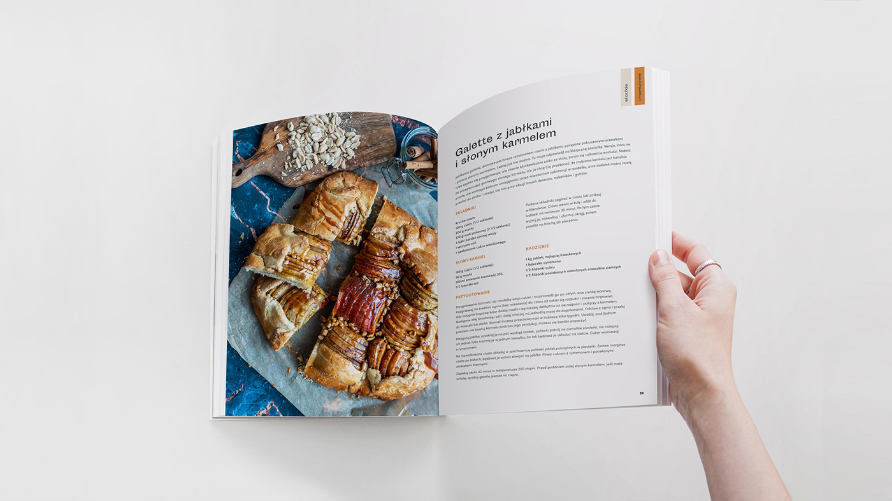
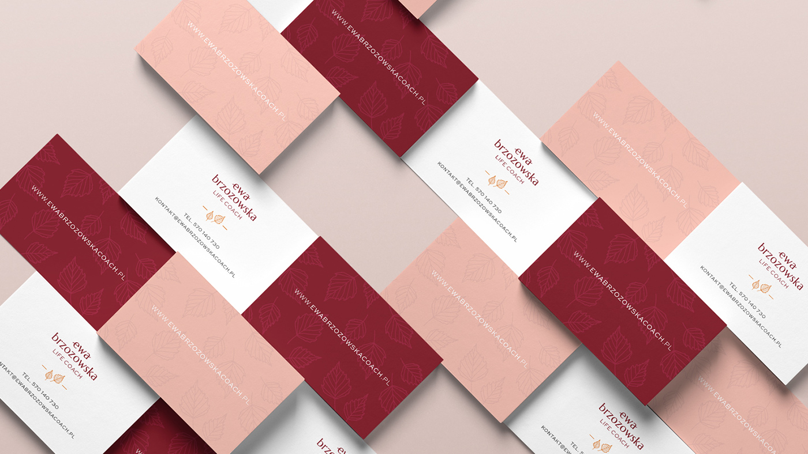
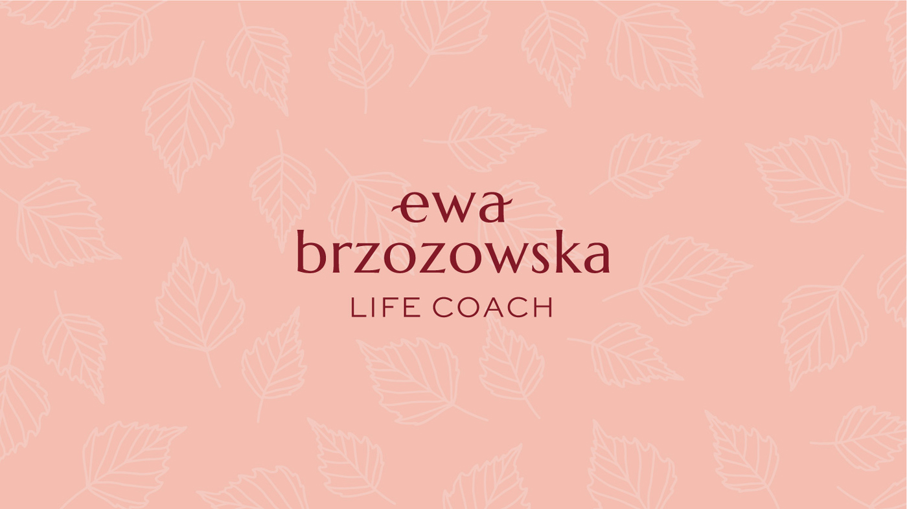
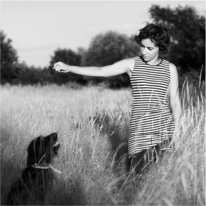

Zajmuję się projektowaniem logotypów, materiałów promocyjnych,
oraz
systemów identyfikacji wizualnej marek.




Projektuję systemy identyfikacji wizualnej dla marek, logotypy, tworzę
ilustracje, składam do druku materiały promocyjne, koordynuję proces powstawania stron
internetowych.
Zapewniam moim Klientom opiekę wizualną nad ich przedsięwzięciem, dbając o
to,
żeby
proces powstawania wspólnego projektu był spokojny, precyzyjny, przemyślany i jasny. Doradzam w kwestii
doboru
materiałów fotograficznych. Uczę rozmawiać z drukarzami tak, by obie strony dokładnie się porozumiały.
Pomagam
wybierać papiery do druku i doradzam we wszelkich kwestiach związanych z poligrafią.
Portfolio

Usługi
Co mogę dla Ciebie zrobić?
Identyfikacja wizualna
Projekt Logotypu
Dobór typografii
Zdefiniowanie kolorystyki marki
Stworzenie brandbooka
Materiały promocyjne
Wizytówki, ulotki, foldery
Grafiki do mediów społecznościowych
Opakowania
Strategia i konsulting
Stworzenie strategii marketingowej
Konsultacje fotograficzne
Zdefiniowanie kierunków rozwoju marki
O mnie

Kasia Erbel
Grafiką użytkową i ilustracją zajmuję się od 15 lat. Przez ten czas nauczyłam się, jak ważne jest
pomaganie klientom na trudnej drodze do własnej identyfikacji wizualnej. Jak sprawiać, by droga
ta okazywała się mniej trudna i jak rozwiązywać problemy, które możemy napotkać. Wierzę, że dobra
współpraca pozwala osiągnąć wspólny cel: spójną, kreatywną, wyróżniającą się i estetyczną
identyfikację marki.
W projektowaniu przywiązuję dużą wagę do typografii i oddechu, dlatego moje realizacje
charakteryzują się czystością przekazu, harmonią i wysokimi walorami estetycznymi.
Po godzinach czytam książki, oglądam filmy i tańczę lindy hop.
Kontakt i wycena
Chcesz stworzyć lub odświeżyć wizerunek swojej firmy?
Skontaktuj się ze mną.